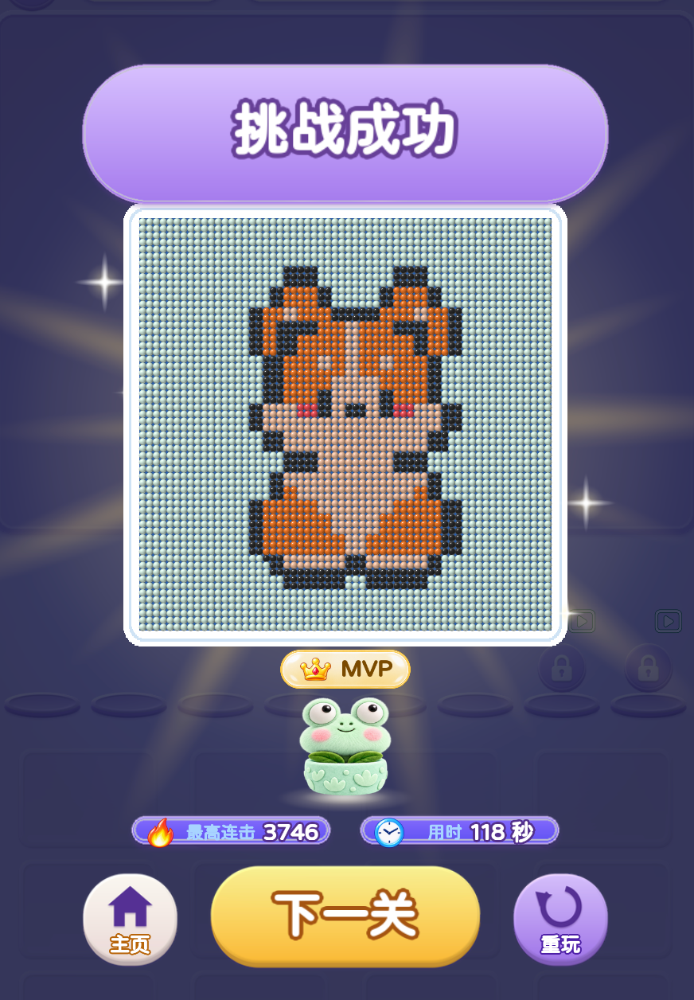
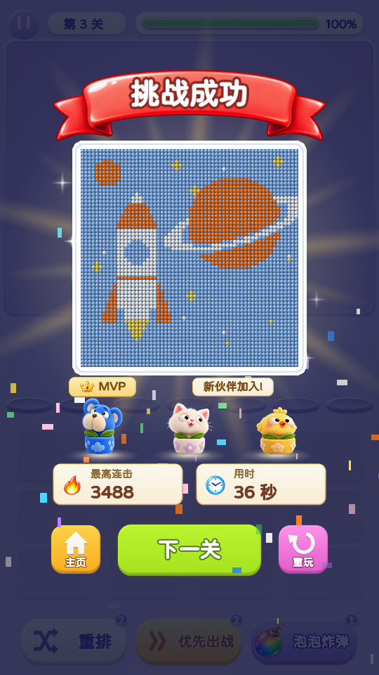
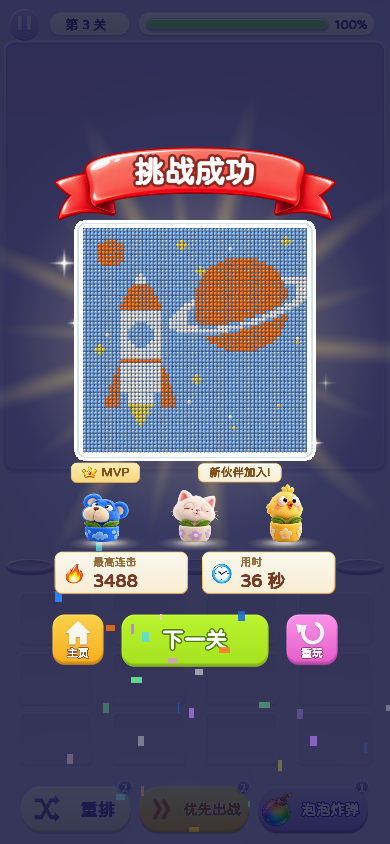

胜利页 · 红飘带与暖金成绩卡
恢复之前的红色飘带与暖白标题。MVP 用金色徽章，伙伴提示用奶油色标签，连击与用时使用标题、数字分层的暖金成绩卡。底部按钮与暂停页统一为橙色主页、绿色下一关、粉色重玩，保留轻薄底边与投影。

修改前
紫色标题底板、狭窄成绩条与旧款底部按钮。

修改后 · 540 × 960
自然通关后的实际连击和用时；红飘带直接复用之前的素材。

修改后 · 390 × 844
徽章、成绩卡与底部按钮保持清楚的间距。
可在第 3 关正常游玩查看胜利页，也可以从暂停页点击“跳过此关”快速查看。现有视频接口为测试模式，直接回调成功。
自然通关截图用于检查实际成绩排版；重玩、返回主页与下一关使用真实点击检查。再次通关时，“本关登场”提示也保持同一套暖金样式。
检查结果 · 再次通关 · 原有逻辑校验
本地构建：2026-10-24 00:07:01（Asia/Shanghai） · 分支 plush-toy